Một ví dụ số giữ nguyên đến cuối phép chú ý
$B=1,\ T=3,\ D=4,\ d_k=d_v=2$
$$X=\begin{bmatrix}1&0&1&0\\0&1&0&1\\1&1&0&0\end{bmatrix}\in\mathbb R^{3\times4}.$$
Tạm bỏ trục lô bằng cách xét mẫu duy nhất.
Ba phép chiếu tạo ba vai trò
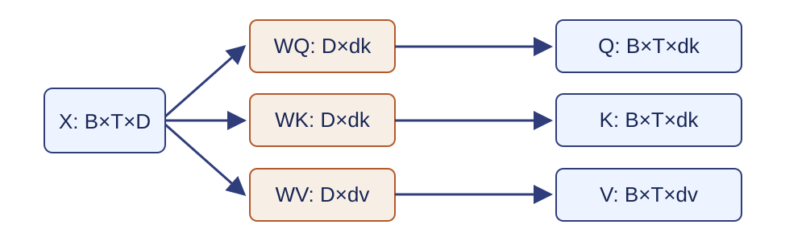
$Q=XW_Q,\quad K=XW_K,\quad V=XW_V$
$W_Q,W_K\in\mathbb R^{D\times d_k}$; $W_V\in\mathbb R^{D\times d_v}$.
Đầu thứ nhất chọn các cặp chiều khác nhau
$W_Q^{(1)}=W_K^{(1)}=\begin{bmatrix}1&0\\0&1\\0&0\\0&0\end{bmatrix}$
$W_V^{(1)}=\begin{bmatrix}0&0\\0&0\\1&0\\0&1\end{bmatrix}$
$$Q^{(1)}=K^{(1)}=\begin{bmatrix}1&0\\0&1\\1&1\end{bmatrix},\quad V^{(1)}=\begin{bmatrix}1&0\\0&1\\0&0\end{bmatrix}.$$
Tích vô hướng tạo ma trận tương thích
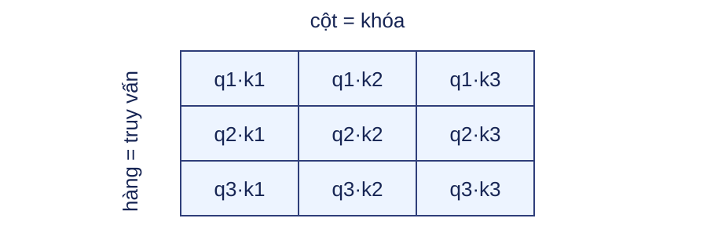
$$Q^{(1)}K^{(1)\top}=\begin{bmatrix}1&0&1\\0&1&1\\1&1&2\end{bmatrix}\in\mathbb R^{3\times3}.$$
Hệ số căn giữ điểm số trong miền ổn định
$S=QK^\top/\sqrt{d_k}$
$$S^{(1)}\approx\begin{bmatrix}.707&0&.707\\0&.707&.707\\.707&.707&1.414\end{bmatrix}.$$
Khi các thành phần độc lập có phương sai gần 1, tích vô hướng có phương sai tăng theo $d_k$.
Mặt nạ được cộng trước softmax
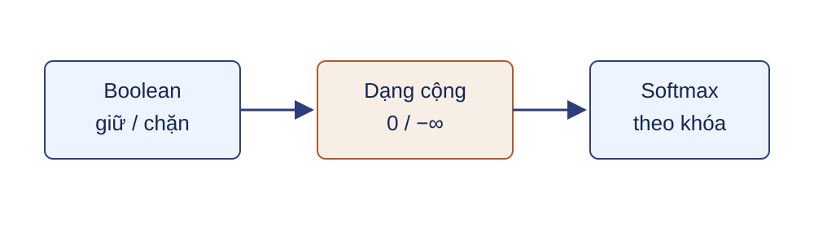
$S,B_M,\widetilde S\in\mathbb R^{B\times T_q\times T_k},\quad \widetilde S=S+B_M$
$(B_M)_{n,i,j}\in\{0,-\infty\}$; $i$ là truy vấn, $j$ là khóa.
Softmax chạy theo trục khóa
$A_{n,i,j}=\dfrac{\exp(\widetilde S_{n,i,j}-m_{n,i})}{\sum_{r\in\mathcal K_i}\exp(\widetilde S_{n,i,r}-m_{n,i})}$
$A\in\mathbb R^{B\times T_q\times T_k}$; $\mathcal K_i$ là tập khóa hợp lệ và $m_{n,i}=\max_{r\in\mathcal K_i}\widetilde S_{n,i,r}$.
Trọng số của đầu thứ nhất có thể kiểm lại
$$A^{(1)}\approx\begin{bmatrix}.401&.198&.401\\.198&.401&.401\\.248&.248&.503\end{bmatrix}.$$
Với $B=1$, ví dụ dùng $B_M=0_{1\times3\times3}$ nên mọi khóa đều hợp lệ; sai số làm tròn chỉ làm tổng hàng lệch rất nhỏ so với 1.
Tổng có trọng số trộn các giá trị
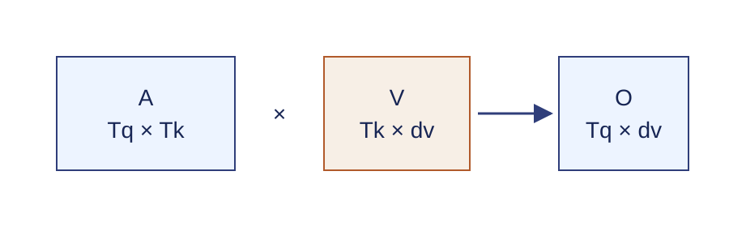
$O=AV\in\mathbb R^{T_q\times d_v}$
Đầu ra đầu thứ nhất giữ đúng hai chiều
$$O^{(1)}=A^{(1)}V^{(1)}\approx\begin{bmatrix}.401&.198\\.198&.401\\.248&.248\end{bmatrix}.$$
Do hàng giá trị thứ ba bằng không, trọng số đặt lên vị trí 3 không thêm nội dung vào ví dụ này.
Kiểm tra phép chú ý có co đúng trục
Câu hỏi: Với $Q:1\times3\times2$ và $K:1\times3\times2$, ma trận điểm có kích thước nào? Softmax chạy trên trục nào? $AV$ trả về kích thước nào?
Bộ giải mã không được đọc nhãn tương lai
Khi dự đoán vị trí $i$, chỉ các khóa $j\le i$ được phép tham gia.
$M^{causal}_{i,j}=\mathbf1[j\le i]$
Mặt nạ nhân quả tạo tam giác dưới
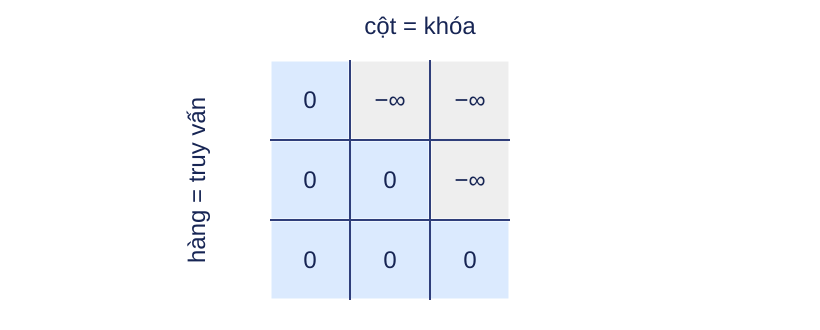
$$B_M=\begin{bmatrix}0&-\infty&-\infty\\0&0&-\infty\\0&0&0\end{bmatrix}.$$
Ví dụ nhân quả đổi hai hàng đầu
$$A^{(1)}_{causal}\approx\begin{bmatrix}1&0&0\\.330&.670&0\\.248&.248&.503\end{bmatrix},\quad O^{(1)}_{causal}\approx\begin{bmatrix}1&0\\.330&.670\\.248&.248\end{bmatrix}.$$
Kiểm tra tác động của mặt nạ
Câu hỏi: Vì sao hàng thứ ba của $A_{causal}$ giống hàng thứ ba của $A$, còn hàng thứ nhất trở thành $[1,0,0]$?
Ba loại chú ý khác nhau ở nguồn tensor
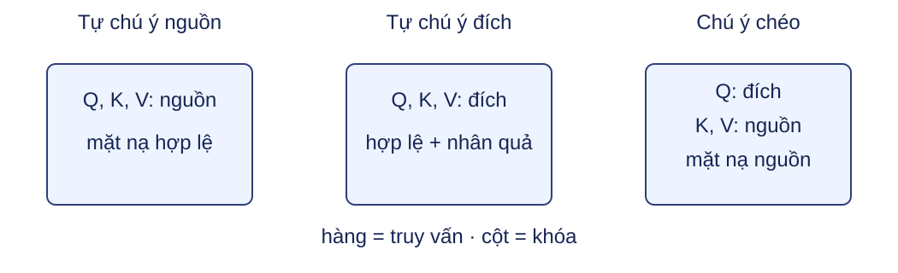
Tự chú ý giữ cùng độ dài truy vấn và khóa
$X\in\mathbb R^{B\times T\times D}\Rightarrow Q,K\in\mathbb R^{B\times T\times d_k},\ V,O\in\mathbb R^{B\times T\times d_v}$
Bộ mã hóa dùng mặt nạ hợp lệ; bộ giải mã kết hợp hợp lệ và nhân quả.
Chú ý chéo có hai độ dài
$Q\in\mathbb R^{B\times T_t\times d_k},\quad K\in\mathbb R^{B\times T_s\times d_k},\quad V\in\mathbb R^{B\times T_s\times d_v}$
$A: B\times T_t\times T_s,\qquad O:B\times T_t\times d_v$
Một hàng bị chặn hoàn toàn không có phân phối
Softmax của hàng toàn $-\infty$ là không xác định.
Hợp đồng triển khai phải bảo đảm mỗi truy vấn hợp lệ có ít nhất một khóa hợp lệ, hoặc bỏ qua và đưa đầu ra hàng đó về không.
Đệm được xử lý ở chú ý và hàm mất mát
Khóa đệm
Chặn trước softmax để không được đọc.
Ký hiệu đệm
Loại khỏi tổng và mẫu số của hàm mất mát.
Mặt nạ khóa có thể mở rộng thành $B\times1\times T_q\times T_k$ và phát qua các đầu.
Kiểm tra nguồn truy vấn, khóa và giá trị
Câu hỏi: Trong chú ý chéo, nếu nguồn dài 5 và đích dài 3 thì ma trận trọng số có kích thước nào? Mặt nạ đệm nguồn phát theo những trục nào?
Nhiều đầu học nhiều phép chiếu song song
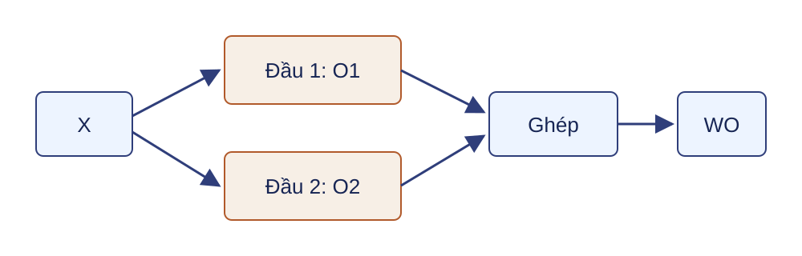
$\operatorname{MHA}(Q_{in},K_{in},V_{in})=\operatorname{Concat}(O^{(1)},\ldots,O^{(H_a)})W_O$
Đầu $h$ dùng $Q_{in}W_Q^{(h)},K_{in}W_K^{(h)},V_{in}W_V^{(h)}$ và trọng số $A_{n,h,i,j}$.
Đầu thứ hai đọc hai cặp chiều còn lại
$W_Q^{(2)}=W_K^{(2)}=[e_3,e_4],\qquad W_V^{(2)}=[e_1,e_2]$
$$Q^{(2)}=K^{(2)}=\begin{bmatrix}1&0\\0&1\\0&0\end{bmatrix},\quad V^{(2)}=\begin{bmatrix}1&0\\0&1\\1&1\end{bmatrix}.$$
Đầu thứ hai tạo một cách trộn khác
$$A^{(2)}\approx\begin{bmatrix}.503&.248&.248\\.248&.503&.248\\.333&.333&.333\end{bmatrix},\quad O^{(2)}\approx\begin{bmatrix}.752&.497\\.497&.752\\.667&.667\end{bmatrix}.$$
Ghép hai đầu khôi phục chiều mô hình
$C=\operatorname{Concat}(O^{(1)},O^{(2)})\in\mathbb R^{1\times3\times4}$
$O_{MHA}=CW_O+b_O,\quad W_O\in\mathbb R^{4\times4}$
Trong ví dụ, chọn $W_O=I_4$, $b_O=0$ để giữ số quan sát được.
Kiểm tra kích thước và số tham số nhiều đầu
Không tính độ lệch: ba phép chiếu và phép chiếu ra có $4D^2$ tham số khi $H_a d_k=H_a d_v=D$.
Câu hỏi: Với $D=4$, hai đầu, $d_k=d_v=2$, số tham số là bao nhiêu nếu có cả bốn độ lệch?
Tự chú ý chưa biết thứ tự vị trí
Nếu hoán vị các hàng của $X$, tự chú ý không mặt nạ hoán vị đầu ra theo cùng cách.
$PE_{p,2i}=\sin(p/10000^{2i/D}),\quad PE_{p,2i+1}=\cos(p/10000^{2i/D})$
Tín hiệu vị trí có cùng chiều $D$ để cộng vào từng hàng đầu vào.
Cộng vị trí tạo đầu vào đầy đủ của tầng
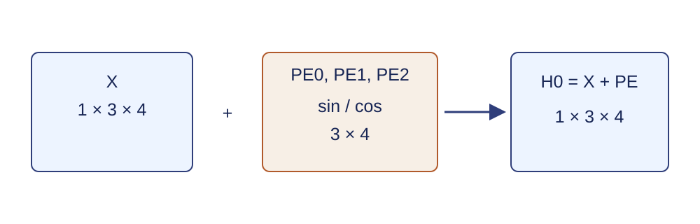
$PE_0=[0,1,0,1]$, $PE_1\approx[.841,.540,.010,1]$, $PE_2\approx[.909,-.416,.020,1]$.
$H_0[0,0,:]=X[0,0,:]+PE[0,:]=[1,1,1,1]$; tầng đầu dùng $Q=H_0W_Q$, $K=H_0W_K$, $V=H_0W_V$.
Câu hỏi: Nếu $X$ có kích thước $1\times3\times4$, $PE$ cần kích thước nào và phép cộng chạy theo trục nào?
Mạng truyền thẳng xử lý từng vị trí độc lập
$\operatorname{FFN}(h)=\operatorname{ReLU}(hW_1+b_1)W_2+b_2$
$W_1:D\times D_{ff}$, $W_2:D_{ff}\times D$; cùng tham số được dùng cho mọi vị trí.
Đường dư giữ một lối truyền trực tiếp
$R=H+\operatorname{Drop}(F(H))$
$F(H)$ phải có cùng kích thước với $H$. Bỏ ngẫu nhiên (dropout), nếu dùng, nằm trên đầu ra nhánh trước phép cộng.
Chuẩn hóa tầng chạy theo chiều đặc trưng
$\mu=\frac1D\sum_j r_j,\quad \sigma^2=\frac1D\sum_j(r_j-\mu)^2$
$\operatorname{LN}(r)=\gamma\odot\dfrac{r-\mu}{\sqrt{\sigma^2+\varepsilon}}+\beta,\quad \gamma,\beta\in\mathbb R^D,\ \varepsilon>0$
Transformer gốc chuẩn hóa sau đường dư
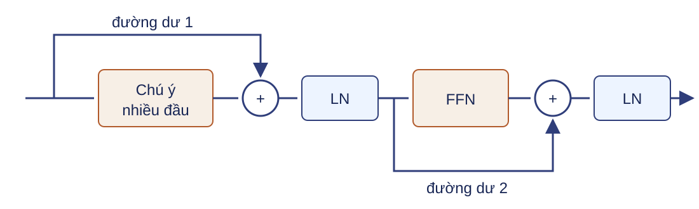
$U=\operatorname{LN}(H+\operatorname{Drop}(\operatorname{MHA}(H))),\quad H'=\operatorname{LN}(U+\operatorname{Drop}(\operatorname{FFN}(U)))$
Bộ mã hóa lặp cùng một hợp đồng tầng
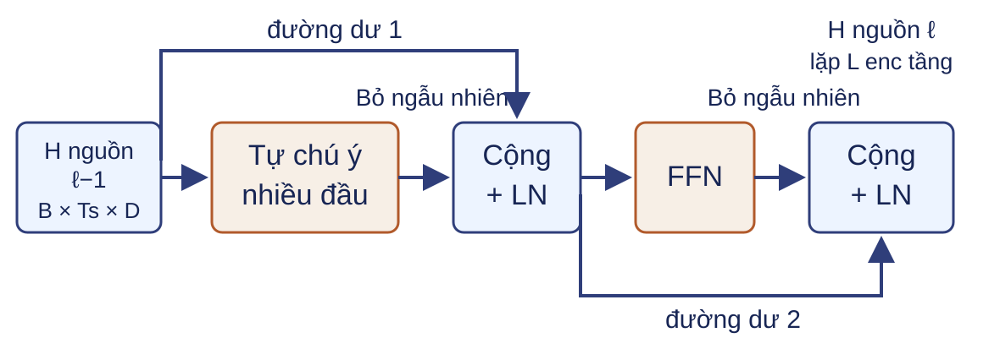
$M_\ell=\operatorname{MHA}(H^{src}_{\ell-1},H^{src}_{\ell-1},H^{src}_{\ell-1}),\quad U_\ell=\operatorname{LN}(H^{src}_{\ell-1}+\operatorname{Drop}(M_\ell))$
$H^{src}_\ell=\operatorname{LN}(U_\ell+\operatorname{Drop}(\operatorname{FFN}(U_\ell))),\quad H^{enc}=H^{src}_{L_{enc}}\in\mathbb R^{B\times T_s\times D}$
Bộ giải mã lặp ba nhánh ở mỗi tầng
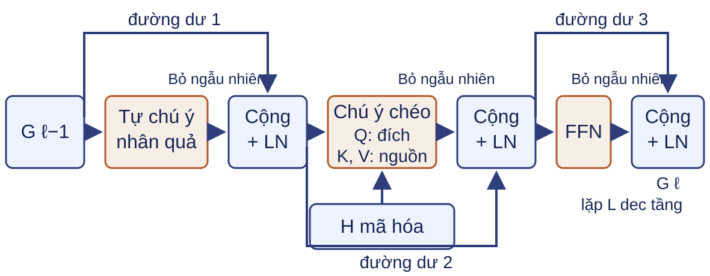
$U_\ell=\operatorname{LN}(G_{\ell-1}+\operatorname{Drop}(\operatorname{MHA}_{causal}(G_{\ell-1},G_{\ell-1},G_{\ell-1})))$
$C_\ell=\operatorname{LN}(U_\ell+\operatorname{Drop}(\operatorname{MHA}(U_\ell,H^{enc},H^{enc})))$
$G_\ell=\operatorname{LN}(C_\ell+\operatorname{Drop}(\operatorname{FFN}(C_\ell))),\quad H^{dec}=G_{L_{dec}}\in\mathbb R^{B\times T_t\times D}$
Chuỗi đích tạo điểm từ vựng và sai số
$Y^{in}=$ <bos> tôi học, $\quad Y^{out}=$ tôi học <eos>
$Z=H^{dec}W_{vocab}+b_{vocab}\in\mathbb R^{B\times T_t\times|V_{tgt}|}$
$N_M=\sum_{n,t}M_{n,t}>0,\quad \mathcal L=-\dfrac1{N_M}\sum_{n,t}M_{n,t}\,\operatorname{logsoftmax}(Z_{n,t,:})_{Y^{out}_{n,t}}$
Dùng cross-entropy hợp nhất hoặc log-softmax ổn định theo trục từ vựng; EOS được tính, vị trí đệm bị loại.
Huấn luyện song song, suy luận tự hồi quy
Huấn luyện
$Y^{in}$ đã có; mọi vị trí đích được tính cùng lúc dưới mặt nạ nhân quả.
Suy luận
Bắt đầu từ BOS, sinh từng ký hiệu và dừng từng mẫu tại EOS hoặc giới hạn dài.
Kiểm tra bốn hợp đồng Transformer
Câu hỏi:- Kích thước của $QK^\top$, $A$ và $AV$ là gì?
- Vì sao cộng $PE$ không đổi kích thước $B\times T\times D$?
- Softmax và LayerNorm chạy theo trục nào?
- Mặt nạ khóa, mặt nạ sai số và dịch nhãn làm ba việc gì?
Hoán vị cho thấy vai trò của vị trí
Câu hỏi: Nếu hoán vị đồng thời các hàng $X$, đầu ra tự chú ý không mặt nạ thay đổi thế nào? Điều gì phá tính đối xứng này?
Chi phí chú ý tăng bậc hai theo độ dài
$QK^\top:\ O(BH_aT^2d_k),\qquad A:\ O(BH_aT^2)$
Vế thứ hai là số phần tử cần lưu cho ma trận trọng số.
Câu hỏi: Tăng $T$ từ 128 lên 512 làm hạng $T^2$ tăng bao nhiêu lần?
Số đầu không đổi tổng chiều chiếu
$H_a d_k=H_a d_v=D\Rightarrow 3D^2+D^2=4D^2$
Câu hỏi: Nếu tăng từ 8 lên 16 đầu nhưng giữ $D$, điều gì xảy ra với $d_k$ và số tham số chiếu không tính độ lệch?
Độ lệch vị trí tạo một phép quay xác định
Đặt $\omega_i=10000^{-2i/D}$. Với mỗi cặp chiều sin–cos:
$\begin{bmatrix}PE_{p+k,2i}\\PE_{p+k,2i+1}\end{bmatrix}=\begin{bmatrix}\cos(k\omega_i)&\sin(k\omega_i)\\-\sin(k\omega_i)&\cos(k\omega_i)\end{bmatrix}\begin{bmatrix}PE_{p,2i}\\PE_{p,2i+1}\end{bmatrix}$
Câu hỏi: Ma trận trên phụ thuộc vào vị trí tuyệt đối $p$ hay chỉ phụ thuộc độ lệch $k$?